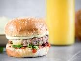

Lamb Burgers

Description
Top them with Dijon mayo, tomato slices, and baby greens.
Ingredients
- 1 pound ground lamb
- 1 tablespoon garlic powder
- 1 4-inch sprig rosemary, chopped
- 4 sprig thyme, chopped
- 1 pinch salt
- 1 pinch ground black pepper
- 3 tablespoons mayonnaise
- 1 tablespoon Dijon mustard
- 4 hamburger buns, split and toasted
- 4 thick slices tomato
- 1 cup mixed salad greens
Steps
- Preheat an outdoor grill for medium heat and lightly oil the grate.
- Mix ground lamb, garlic powder, rosemary, thyme, salt, and pepper together in a large bowl until thoroughly combined; shape into 4 patties.
- Place patties on the preheated grill and cook until firm and slightly pink in the center, about 5 minutes per side. An instant-read thermometer inserted into the center should read 140 degrees F (60 degrees C). Alternately, you can cook the patties to your desired degree of doneness. Rest patties while assembling toppings.
- Mix mayonnaise and mustard together in a small bowl. Spread 1 tablespoon on bottom of each hamburger bun; top each one with a lamb patty, tomato slice, and some greens. Sandwich with top bun to serve.